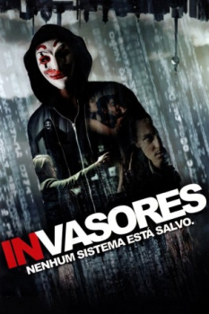

Invasores: Nenhum Sistema Está à Salvo (2014)


No system is safe.

Avaliação (TMDb):


7.7/10 (1K votos)
Avaliação (Usuário):
Outro Título:Who Am I - Kein System ist sicher (Título Original)
País:Germany, 105 minutos
Idiomas falados:Alemão, Português
Gênero(s):Suspense
Diretor(s):Baran bo Odar
Codec:MPEG-2 (DVD)
Número: 1851
Sinopse:
Benjamin, um jovem gênio da informática é convidado para se integrar a um subversivo grupo de hackers que procura a atenção por todo o mundo.
Elenco:
Tom Schilling, Elyas M’Barek, Wotan Wilke Möhring, Antoine Monot Jr., Hannah Herzsprung, Trine Dyrholm, Stephan Kampwirth, Leopold Hornung, Katharina Matz, Marten Borgwardt
Tipo de mídia: DVD5,
Legendas: Português
Alugado: Não
Tela: 2.35:1